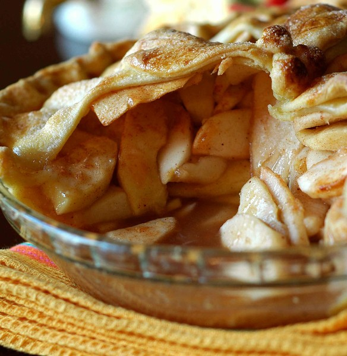

Apple Pie
Back to Homepage

The following recipe is directly from Preppy Kitchen, because in no way am I a baker. I simply code websites, and this is a TOP project. Here is a link to the recipe.
Ingredients
- pie crust
- flour
- apples
- lemons
- eggs
- sugar
- butter
- nutmeg
- cinnamon
How to Make Apple Pie
- Slice the apples and place them in a large bowl, juice the lemons over them.
- Add the sugar, flour, and spices. Stir.
- Flour whatever surface you are using and use a rolling pin to roll out the crust. Should be about a 12 inch circle. Line this in a 9 inch pie dish and let the rest of the crust hang over the edges.
- Create an even layer of apple pie filling at the bottom of the crust. Should create a slight mound in the center.
- Dot this with cubed butter, whatever the eff that statement means.
- Roll another circle of crust, place it on top of the other crust and pie filling. Trim excess pie dough, crimp the edges.
- Cut slits on top of the pie, then place pie dish onto a rimmed baking sheet lined with parchment paper.
- Brush the crust with beaten egg wash, then bake at 425F for 20 minutes. After that, reduce heat to 375F and continue until crust is deep golden brown. Takes about an hour.
- Let it cool for four hours before slicing.